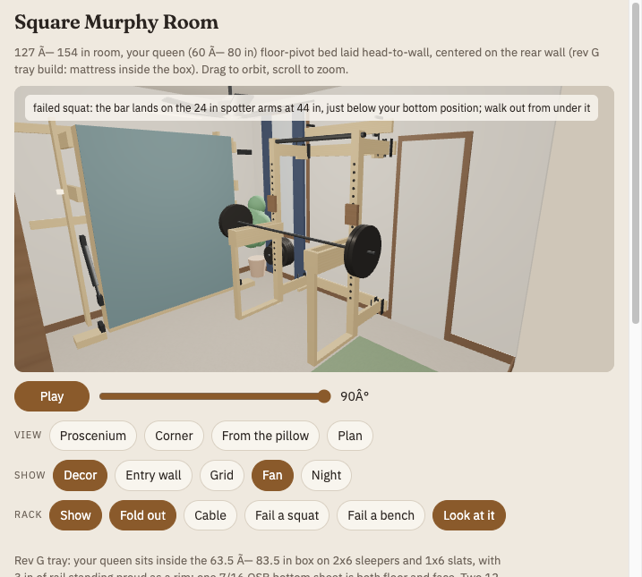
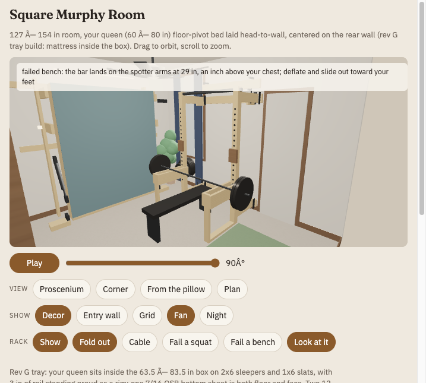
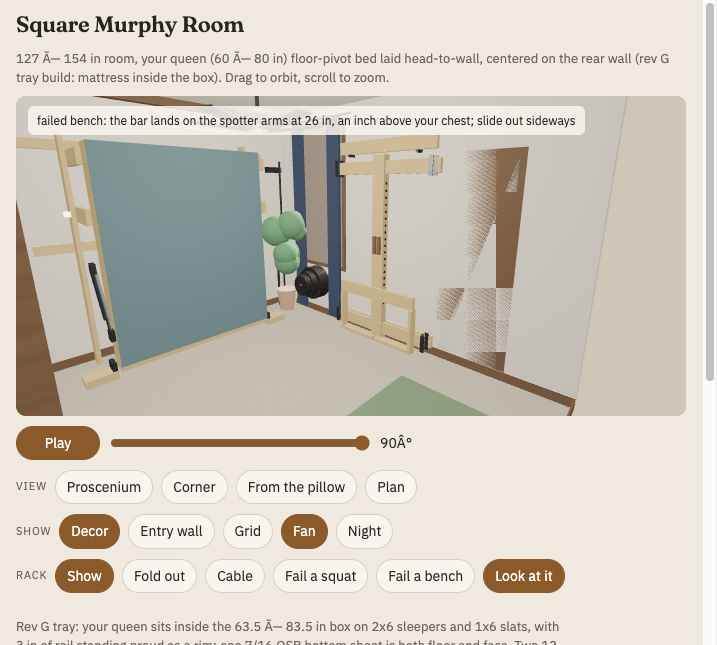
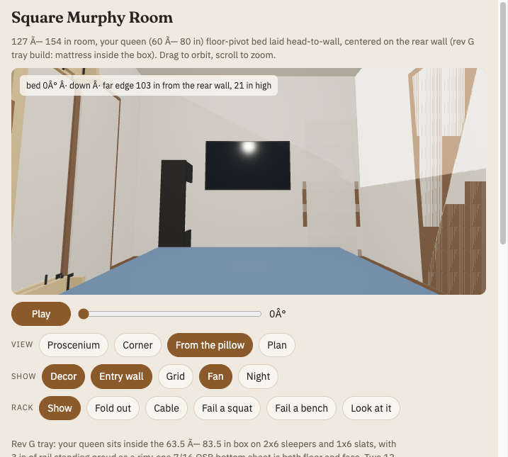
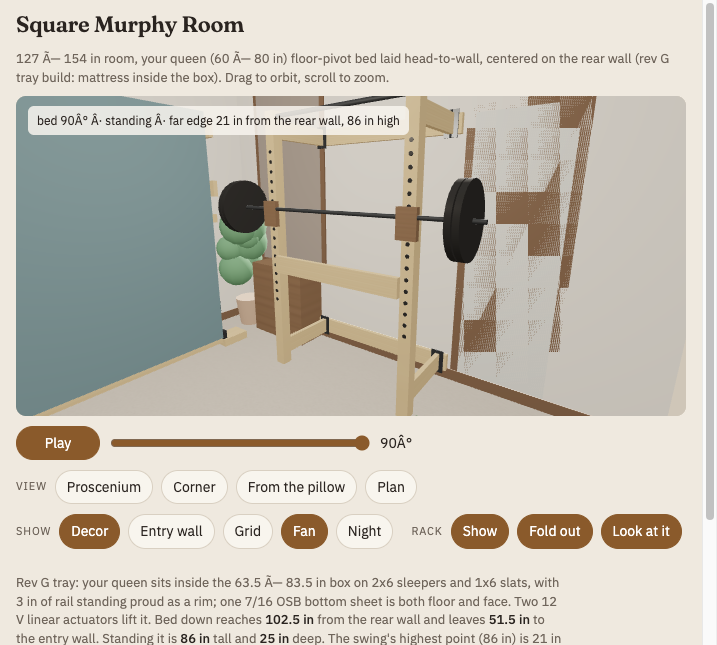
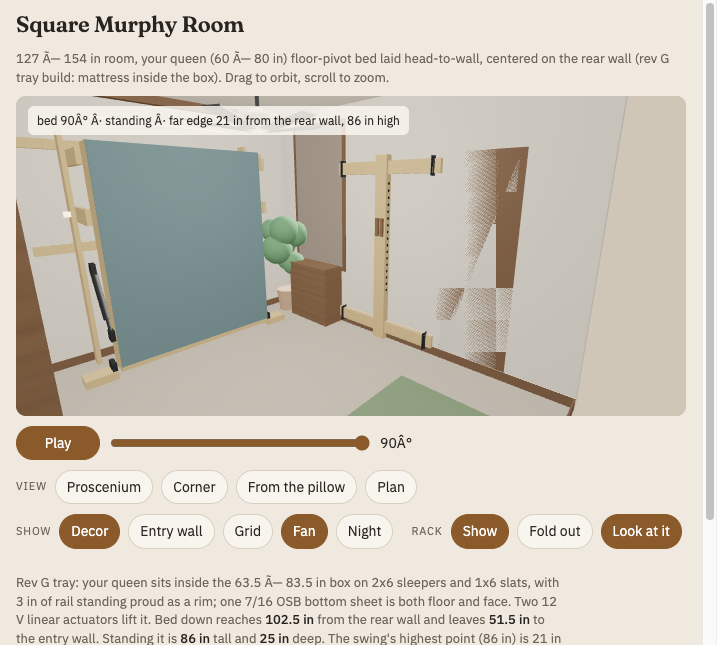
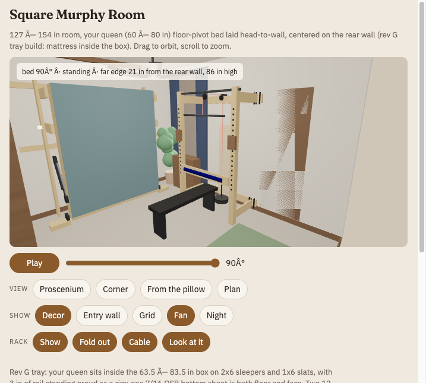

Fold-Flat Squat Rack
A gate-style wooden rack on the bedroom's right wall, designed into the same room model as the bed. Folded it is 5 in off the wall. Out, it is a full squat and bench station with safeties and a pull-up bar. 23 Nov 2026. Build it step by step: tutorial steps R1 to R5. See it move: room model, press "Fold out" under Rack, then "Look at it".
0. What saves you when a lift fails (revised 23 Nov, afternoon)
The first version of this page was wrong about this. It had one 2x6 plank across the post fronts on pins and called it the safety. The J-blocks are on the room side of the posts, so you unrack and step back into the room; a squat then descends 6 to 10 in in front of the post plane and a bench bar sits 8 to 12 in in front of it. The plank was in the post plane. The bar misses it. A power rack catches you because its safeties run front to back under the whole bar path; this rack has no depth on the room side, so it needs spotter arms.
Spotter arms, with the load carried to the floor (as revised by the independent review, section 11). On each post: two 2x8 x 27.5 in cheeks, one on each face of the post, bolted through two of the post holes with 1/2 in bolts 4.75 in apart so the bolts are in double shear, projecting 24 in in front of the post. A 2x4 leg, one length with holes every 1.5 in, pinned between the cheek tips at whichever hole puts its foot on the floor, standing on a 2x4 x 24 in foot pinned to the post base. A dropped bar lands on the cheeks, goes down the leg into the foot and the floor. The arms, leg and foot come off (four pins) and hang on hooks above the stringer when the rack folds. Set the arms 2 in below your squat bottom (36 in bottom, 43 in top) and 1 in above your chest for bench (21 in bottom, 28 in top). Arm holes are drilled for 1.5 in steps.


Both are animated in the room model: Rack, then "Fail a squat" or "Fail a bench". The plank survives only as the knee hold-down for the cable pulldown.
0b. Where everything lives when the rack is folded


0c. Does it fold through itself? It did, twice, and does not now
Two self-collisions were found by checking the folded state, not by looking at the deployed drawing. First, the spotter arms, legs and feet of the two gates landed on top of each other along the wall; they now come off on four pins before folding and hang above the plank. Second, with 21 in gate arms the two folded posts overlapped by an inch; the gate arms are 19 in, which leaves 3 in between the folded posts. A third one was caught while fixing the gate lock: the first stop block sat on the inner side of the arm, exactly where the arm swings when folding. The blocks are now one flat block under each arm (the drop pin goes through the arm into it) and one standing block on the outer side only, so nothing is in the fold path. Plan view in the model now hides the ceiling, so you can watch the fold from above.
Pre-made spotter arms or custom? Custom, for this rack. Commercial spotter arms (Titan, Rogue, about $60 to $120 a pair) are steel sleeves that slide over a 2x3 or 3x3 in steel tube upright and pin through it; they have nothing to grip on a 4x4 wooden post and would need a steel sleeve built around the post to use them, which costs more than the arms. The doubled 2x8 cheeks cost about $15 in wood and bolts, bolt through the post holes you already drilled, and are sized to your dimensions: squat arms at 24 to 31 in and bench arms at 19.5 to 27 in for 5 ft 11-3/4 on a 17 in bench. The pre-made route that does make sense is a different rack entirely: the $100 Sunny power rack on Marketplace comes with pin safeties, or a Titan T-3 folding rack at $330 comes with arms that fit it. Both lose on floor space or money, which is why the wooden gates are still the pick.



1. Where it goes and why
The only wall with a clear 54 in run that the bed never touches is the right wall between the closet door casing (51 in from the entry wall) and the window (105 in). The stringers sit at 52 to 106 in. Out, the bar hangs 28 in off that wall, which is 8 in clear of the bed box when the bed is down and 30 in clear of the standing bed. You cannot lift with the bed down (no room to walk the bar out), so this is a bed-up station, and with the bed up the whole 127 x 129 in floor is yours. The low cabinet moves from under the rack to under the window (it is 30 in tall; the window sill height is still unmeasured, so check it clears).
The entry wall was ruled out because a 7 ft bar centred on it needs the TV wall and still overlaps the entry door swing; the left wall because the bathroom door casing sits where the stringers would go; the rear wall is the bed's.
2. How it works
Two 2x6 stringers are lagged flat to the wall studs, one at 76 in and one at 3 in. Each post is a 4x4 standing on the floor at the end of two 21 in 2x6 arms, top and bottom. The arms hinge on 1/2 in bolts through steel plates at the stringer ends, so each post swings like a gate. Swing both posts out square to the wall and shoot a barrel bolt on each top arm into a stop block on the stringer: the posts are now 48 in apart on centre, 44.5 in clear, and cannot swing either way. Drop the 1-1/4 in pipe into the notches at the post tops (pull-up bar, and it ties the two gates together), set the safeties and J-blocks on their pins, done. To fold: lift out the pipe, pull the two barrel bolts, swing the posts inward. The J-blocks and safeties stay on their pins or hang on the stringer.
Every vertical load (bar, plates, you on the pull-up bar) goes straight down the posts into the slab. The hinges, lags and stringers only see the sideways forces of racking the bar and kipping, which are small.
3. Cut list and parts
| Part | Stock | Qty | Size | Notes |
|---|---|---|---|---|
| Stringers | 2x6 | 2 | 54 in | flat on the wall at 76 and 3 in (top edges 81.5 and 8.5); two 3/8 x 4 lags into every stud they cross (3 or 4 studs) |
| Gate arms | 2x6 | 4 | 21.25 in (19 in from pin to post plus a 2 in rounded tail) | on edge; pivot hole 2 in from the tail end with a 1/2 in ID steel sleeve (a short 3/8 pipe nipple) driven in so the pine does not oval; post end screwed and glued to the 4x4 with four 3 in screws; drop-pin hole 6 in from the pin |
| Posts | 4x4 | 2 | 84 in | 1-1/16 in holes every 3 in from 18 to 72 in on the room face, 1-3/8 in notch at the top for the pipe; SE 59th gives away fence posts, otherwise $10 each new |
| Hinge plates | 1-1/2 x 1/8 in angle (the same bed frame) | 8 | 7.5 in | two per hinge, one each side of the arm, bolted to the stringer end with two 3/8 x 3 bolts; the arm pivots between them on a 1/2 x 4 bolt with a nylock, pin 2-1/4 in off the stringer face |
| Stop blocks | 2x4 | 4 | 7.5 in | screwed to the stringer face beside each arm's square position, top and bottom; drilled 9/16 in vertically in line with the arm hole |
| Drop pins (gate lock) | 1/2 x 8 in steel pin with a ring | 4 | drop vertically through the arm into the stop block, top and bottom arm of each gate; gravity-held and visible, so a forgotten lock is obvious; replaces the barrel bolts | |
| J-blocks | 2x6 | 2 | 8 in | 1-3/8 in notch sawn in the top edge for the bar, lined with 1/8 in UHMW or stall-mat rubber; hang on two 3/4 in pins through block and post, pins at least 2 in below the notch bottom; a wear part |
| Spotter arms | 2x6 | 2 | 23.5 in | on edge, lapping the post's outside face by 3.5 in, two 1/2 x 5 in bolts through the post holes, 20 in projecting; set 2 in below your squat bottom or 1 in above your chest |
| Spotter legs | 2x4 | 2 | cut to the arm height (about 20 in bench, 38 in squat; make two pairs) | under the arm tip, screwed to the arm and the foot; carries the dropped bar to the floor |
| Feet | 2x4 | 2 | 20 in | flat on the floor, bolted to the post base with a 3/8 x 5 in bolt; fold with the post |
| Knee-pad plank (cable only) | 2x6 | 1 | 50 in | on edge across the post fronts on the 26 in pins, wrapped in pipe insulation; a 13/16 in hole 3 in from each end drops over the pins |
| Pins | 3/4 in cold-rolled bar | 6 | 6 in | one 36 in bar cut in six; 1-1/16 in holes give the 3/4 pins play; 4 for the J-blocks, 2 for the plank |
| Pull-up bar | 1-1/2 in schedule 40 black pipe (1.9 in OD) | 1 | 54 in | drops into 2 in wide, 2 in deep notches in the post tops with a 3/8 in pin through the cheeks over it; 1-1/4 pipe reaches yield under a 250 lb kipping pull-up (about 625 lb mid-span) |
| Lags and bolts | 16 x 3/8 x 4 lags, 4 x 1/2 x 4 bolts with nylocks and washers, 16 x 3/8 x 3 bolts with nuts for the plates, 3 in screws |
4. Numbers
| Check | Result |
|---|---|
| Rated bar load | 500 lb on the J-blocks (250 lb per post). The 4x4 in compression is good for several thousand pounds; the limit is the pins |
| 3/4 in pin, 250 lb at 1.5 in cantilever | 375 lb-in, 9 ksi bending, yield 50 ksi. Bearing on the 4x4: 48 psi against 600 psi allowable |
| Pull-up pipe, kipping pull-up (2.5 x 250 lb = 625 lb mid-span, 48 in) | 1-1/2 sched 40: 7,500 lb-in over S = 0.326 in³ is 23 ksi against 30 ksi yield. 1-1/4 would be 32 ksi, at yield; 1 in would bend |
| Spotter arm, 300 lb dropped at the tip, with the leg | The leg takes it: a 2x4 in compression carries 1,500 lb at 40 in. The bolt pair sees the leftover, a few hundred pounds in double shear against about 600 lb allowable per bolt. Hinge load is trivial |
| Spotter arm, 300 lb dropped at 20 in, leg forgotten | Bolt pair sees a 3,000 lb couple: failure, and the 2x6 would split out at the lower bolt. This is why the cheeks are 2x8, doubled, with the bolts 4.75 in apart in double shear, and why the leg is one length that fits every height, so there is no excuse to skip it |
| Hinge bearing, 300 lb | 400 psi on the wood, 2,400 psi on the two 1/8 in plates: fine. The 2 in tail and the steel sleeve stop the pin tearing out along the grain or ovalling the hole |
| Carpet under the posts | 20 psi, no problem, but the pad compresses 1/4 in before it bottoms, which would hand the bar load to the hinge bolts. The 6 x 6 plywood pads stop that |
| Old cross plank as a safety | Does not catch a bar lifted in front of the posts. Demoted to the cable knee pad |
| Hinge bolt, 1/2 in in double shear | several thousand pounds; sees under 150 lb from racking or kipping |
| Stringer lags | 6 to 8 lags per stringer at about 500 lb withdrawal each in a dry stud; worst case is a 200 lb kipping pull-up, under 150 lb sideways |
| Fold geometry | Posts swing inward 90 deg on 19 in arms; folded posts lie at 74 to 77.5 and 80.5 to 84 in along the wall, 3 in apart, 5 in deep (21 in arms would have overlapped by an inch). Spotter cheeks, legs and feet come off first; they would overlap each other folded |
| Bed clash | Rack out: the bar runs along the right wall 28 in off it, so its plates reach 99 in from the left wall; the bed box edge is at 95 in, 4 in short of the plates with the bed down and 30 in short of the standing bed. Rack folded: 5 in deep, 27 in outside the bed box's edge. Checked in the room model at every bed angle; neither state touches the bed, and the out state is only used with the bed up anyway |
| Fan | The rack is 60 in from the fan centre; overhead press inside the rack is clear of the 86 in glass only below the bar height, so press outside the fan's 20 in radius, which the rack position already does |
| Bar length | 7 ft bar overhangs the posts 18 in each side, 37 to 121 in from the entry wall; the closet door casing ends at 51 and the window glass is on the wall, so neither is touched |
5. Build order (one afternoon)
- Mark studs on the right wall between 52 and 106 in. Screw the top stringer to the wall at 76 in, level, two lags per stud. Same for the bottom stringer at 3 in.
- Drill the post holes (every 3 in, 24 to 72, 1-1/16 in spade bit, square to the face) and the top notches. Glue and screw the arms to the posts, top arm flush at 76, bottom arm at 3.
- Bolt the hinge plates to the stringer ends. Stand each gate, slide the arms between the plates, drop the 1/2 in pivot bolts, nylocks snug not tight.
- Swing each gate square, clamp, screw the stop blocks to the stringer either side of the top arm, fit the barrel bolts.
- Cut the pins and pipe, saw the J-block notches, drill the safety holes. Hang everything, drop the pipe in. Load the bar to 135 and rack it hard a few times; check nothing shifts.
6. What it costs
| Line | Cost | Source |
|---|---|---|
| 2x6 stock (two stringers, four arms, two J-blocks, two safeties, about 28 ft) | $0 to $16 | the free pergola lot, or four 8 ft from the $4 2x6 seller |
| Two 4x4 x 8 ft posts | $0 to $20 | SE 59th fence posts, or Home Depot |
| Hinge plates | $0 | offcuts of the same bed frame bought for the bed |
| 3/4 in x 36 in cold-rolled bar | $12 | eBay, or a steel yard drop |
| 1-1/4 in x 60 in black pipe | about $25 | Home Depot plumbing aisle, cut to 54 |
| Lags, bolts, nylocks, barrel bolts | about $30 | Home Depot bins |
| Rack total | $67 to $103 | Titan T-3 folding rack is $330, PRx Profile $600 and up |
7. Used racks on Marketplace right now, and why the wooden one still wins
None fold. The room has no floor to give up permanently, so a stand is a worse answer than $70 of wood on hinges.
8. Loading it: bar and plates, and the space-saving alternatives you asked about
| Option | What it gives | Cost now | Space | Verdict |
|---|---|---|---|---|
| 7 ft Olympic bar plus iron plates (used) | Squat, bench, deadlift, row, press to any load; plates also load dumbbell handles and a cable pin | Bar $50 to $75; 200 lb of plates $100 to $150 | Bar stands in the corner behind the folded post; plates on a 10 in pipe peg pair on the bottom stringer, zero floor | Buy. Cheapest pound-for-pound load there is, and the rack exists for it |
| DIY cable on the pull-up pipe (safety checks: pulley 1 sees twice the rope tension, 300 lb at a 150 lb pull, same as the pull-up case the pipe was sized for; the stringer bracket sees 150 lb each way into the lags; use 1/4 in rope rated 1,000 lb or more, or 3/16 cable with thimbles; the knee pad is the 2x6 safety on pins, which cannot lift) | Lat pulldown, seated row, triceps, face pulls, cable curls, using the same plates on a loading pin | Two 90 mm pulleys with brackets $6 (Warr Acres listing), 25 ft of 3/16 cable or 1/4 rope $12, loading pin $15, handle $10: about $45 | Hangs on the pipe when out, bags up when folded | Buy. This is the "cheap cables" answer, and it is better than any $150 used pulldown tower because it uses plates you already own |
| Resistance bands, 5-band set with handles and door anchor | 10 to 150 lb, banded squats and bench off the bottom arms (loop over the 3/4 in pins), rehab and warm-up | $30 to $40 new | A hook on the wall | Buy. Already on your gym list |
| Loadable Olympic dumbbell handles | Dumbbells to 80 lb a hand from the same plates | $30 to $40 a pair new, or the $130 OKC bar-and-handles listing | Two handles on the plate peg | Buy instead of the Yes4All set: same plates, more range, $100 less |
| Dip belt | Weighted pull-ups and dips with plates | $15 to $20 | Hook | Buy later |
| Sandbag or water-filled plates | Load without iron | $30 to $60 | A bag in the closet | Skip. Iron is cheaper per pound used and works on the bar |
| Used cable tower or home gym machine | Cables with a weight stack | $100 to $300 | A permanent 3 x 4 ft | Skip. No floor for it |
9. Bar and plate listings, opened live 23 Nov
A sensible first buy: the Yukon Weider set ($150, bar plus 198 lb) or the Edmond CAP pieces ($200, bar plus 180 lb), plus the Warr Acres pulleys. Rack, bar, 200 lb, cable and bands together land around $300 to $350.
11. Independent review, 23 Nov (Fable), and what changed
Verdict as submitted: not as drawn. "The concept is sound, but five details would let a real failure hurt someone." Every item below is now in the cut list and the model.
| Finding | Change made |
|---|---|
| 20 in arms are marginal: a two-step walkout puts the bar 18 to 26 in out, a bench "roll of shame" 16 to 22 in. Bench arm top at 25 in was below a lying adult's chest (26 to 28 in) | 24 in projection (27.5 in cheeks, what commercial half-rack arms use); holes for 1.5 in steps; bench arm now 21 to 28 in |
| Without the leg the single 2x6 arm's bolt pair sees a 3,000 lb couple and the lower bolt is 1.25 in from the loaded edge: it splits out. A leg cut to one height will be skipped at the other | 2x8 cheeks on both faces of the post, bolts in double shear 4.75 in apart; one 44 in leg with holes every 1.5 in fits every arm height |
| Hinge pin at the arm's end has zero end distance along the grain; pine pin holes oval with folding | 2 in rounded tail past the pin, pin moved to 2-1/4 in off the stringer, 1/2 in ID steel sleeve driven into each arm |
| Barrel bolts: two fixed blocks cannot bracket an inward-swinging arm; the pipe does not stop both gates parallelogramming; a forgotten bolt lets an off-centre re-rack swing the gate and drop the bar | Vertical drop pins through arm and stop block, top AND bottom arm of each gate, gravity-held and visible |
| 1-1/4 in pipe is 1.66 in OD, so a 1-3/8 notch does not fit it; at a kipping pull-up (about 625 lb mid-span) it is at yield | 1-1/2 in sched 40 (1.9 in OD, 23 ksi), 2 x 2 in notch, 3/8 in pin over the pipe |
| Carpet pad compresses 1/4 in before it bottoms, handing the bar load to the hinge bolts | 6 x 6 x 3/4 in plywood pad under each post |
| J-block notch will groove and chew knurl; block can shear along the grain if the pins are close under the notch | Notch lined with UHMW or stall-mat rubber; pins at least 2 in below the notch; treated as a wear part |
| Folded clearance not verified: arms, legs and feet overlap along the wall | Checked: with 21 in gate arms the two folded posts overlapped by 1 in. Gate arms are now 19 in (posts 3 in apart); spotter assemblies come off and hang above the stringer |
Numbers quoted from the reviewer: hinge bearing 400 psi wood and 2,400 psi plate; 2x4 leg 1,500 lb capacity at 40 in; bolt pair without a leg 3,000 lb each against about 600 lb allowable; 1-1/2 pipe S = 0.326 in³. Single-arm drop with the leg: post twist about 2.5 in times 450 lb, trivial.
10. Bed material listings, re-checked 23 Nov 11:05
All still live: Newalla 2x10s at $15, the free pergola lot, the $10 OSB, both bed frames, the $4 2x6 lot, the SE 59th fence pile, and the new Moore and Bethany free piles. Full list on the sourcing page.